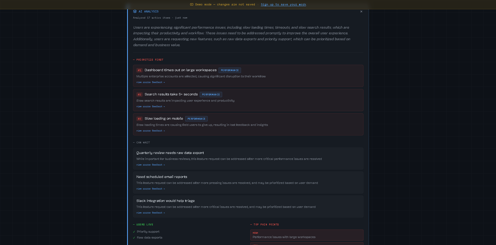

A feedback intelligence platform that turns raw user feedback into ranked priorities. Pulse collects feedback across sources, classifies it with AI, tracks sentiment and category trends week over week, and generates a ranked AI analysis — with evidence attached — that tells a product team what to fix first and what can wait.
- React
- PostgreSQL
- Groq API
- Sentiment analysis
- Trend analytics
